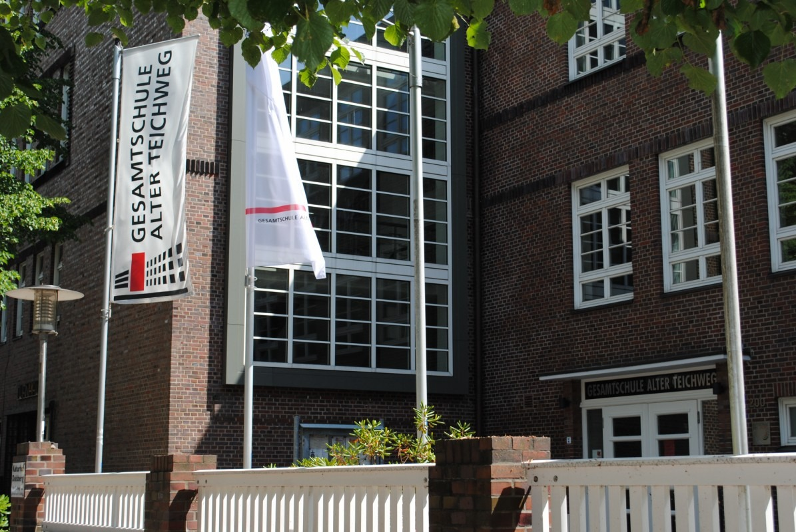
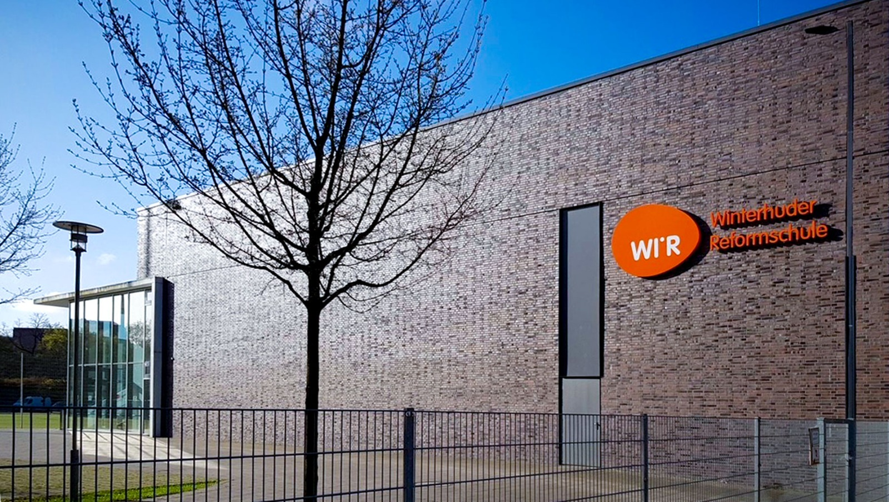

After primary school, students in Hamburg typically continue their education at either a Gymnasium or a Stadtteilschule. While both lead to nationally recognized qualifications, they differ in learning pace, structure, and educational focus.
A Gymnasium follows a more academically intensive curriculum and usually leads to the Abitur after eight years of secondary education (Grade 12). A Stadtteilschule offers a more flexible learning environment with longer learning periods and greater individual support. Students can achieve all major school-leaving qualifications, including the Abitur, which is typically completed after 13 years of schooling (Grade 13).
Beyond these structural differences, many schools in Hamburg have developed their own educational profiles and special concepts. Some specialize in music, languages, STEM, sports, or the arts, while others emphasize inclusive education, digital learning, sustainability, or international exchange. These profiles shape each school’s learning environment and extracurricular opportunities.
For example, Stadtteilschule Alter Teichweg is known for its strong focus on inclusion, student participation, and a broad range of extracurricular activities. Gymnasium Bornbrook (GSB), on the other hand, combines an academically demanding curriculum with individual support and a diverse extracurricular program.
These differences show that educational opportunities are influenced not only by whether a student attends a Gymnasium or a Stadtteilschule, but also by each school’s individual concept, priorities, and learning environment.

Die Grund- und Stadtteilschule Alter Teichweg (ATw) ist eine inklusive Schule für alle – von der Vorschule bis zum Abitur. Ihr pädagogisches Konzept verbindet individualisiertes Lernen, umfassende Begabtenförderung und gelebte Gemeinschaft mit besonderen Schwerpunkten in Sport, Kultur, Sprachen und Berufsorientierung.
Als Eliteschule des Sports fördert der ATw sowohl Leistungssportlerinnen und Leistungssportler als auch Bewegung und Gesundheit im gesamten Schulalltag. Internationale Vorbereitungsklassen, Austauschprogramme, vielfältige Kultur- und Projektangebote sowie multiprofessionelle Teams ermöglichen allen Schülerinnen und Schülern, ihre persönlichen Stärken zu entdecken und sich individuell weiterzuentwickeln.
← Back to the interview
Die Winterhuder Reformschule versteht sich als inklusive Schule für alle Kinder und Jugendlichen – von der Vorschule bis zum Abitur. Im Mittelpunkt stehen selbstbestimmtes Projektlernen, jahrgangsübergreifende Lerngruppen, demokratische Mitbestimmung und die individuelle Förderung persönlicher Stärken.
In mehrwöchigen Projekten zu gesellschaftlichen und nachhaltigen Themen lernen die Schüler*innen eigenverantwortlich, im Team und ohne den Fokus auf Noten. Ergänzt wird das Konzept durch vielfältige Ganztagsangebote, sogenannte Ateliers, erlebnispädagogische Herausforderungen sowie umfassende Unterstützungs- und Therapieangebote. So entsteht ein Lernort, an dem Vielfalt, Eigenständigkeit, Gemeinschaft und angstfreies Lernen gelebt werden.
← Back to the interview